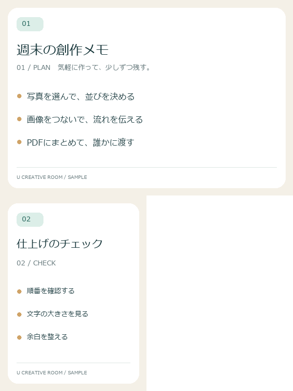
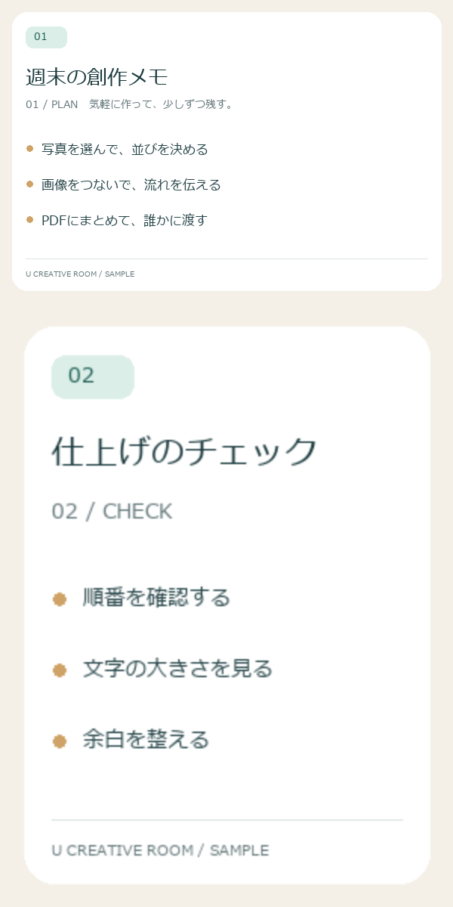
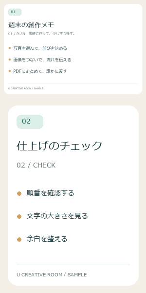
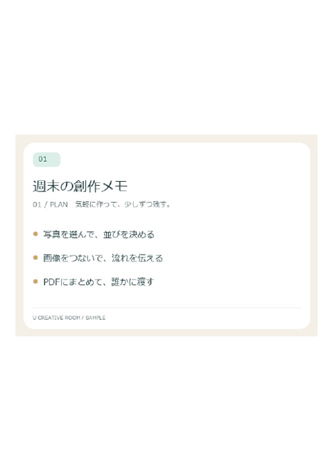
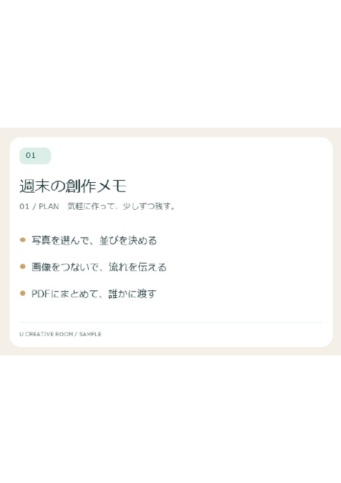
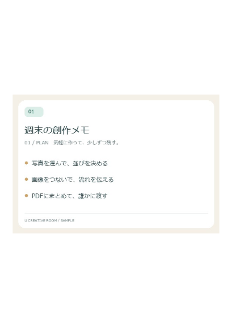

HOW-TO / IMAGE & PDF
複数のスクリーンショットを1枚の画像・1つのPDFにまとめる手順
手順の説明、作業記録、比較画像など、複数のスクリーンショットをまとめて渡したい場面はよくあります。まとめ方には「縦や横につないだ1枚の画像」と「1枚ずつページにしたPDF」の2通りがあり、相手の見方によって向き不向きがあります。
1枚の画像とPDF、どちらを選ぶか
| まとめ方 | 向いている場面 | 気をつけたいこと |
|---|---|---|
| 縦につないだ1枚の画像 | チャットやSNSで送る、スマートフォンで上から順に読んでもらう手順説明 | 長くなりすぎると、送信先のサービスで縮小されて文字が読みにくくなることがある |
| 横につないだ1枚の画像 | 変更前と変更後を並べる比較、2〜3枚の写真の見比べ | 枚数が増えると横に長くなり、スマートフォンでは小さく表示される |
| 1枚ずつページにしたPDF | 印刷する、メールに添付する、ページ番号で指示しながら説明する資料 | 画像を貼ったPDFなので、見えている文字を検索・コピーできない場合がある |
迷ったときは、相手が「スクロールして読む」なら1枚の画像、「ページをめくる・印刷する」ならPDF、と考えると選びやすくなります。どちらの方法でも、当サイトのツールは画像をブラウザの中で処理し、サーバーへ送信しません。
画像結合ツールで1枚にまとめる
- 画像を選ぶ：画像結合ツールを開き、PNG・JPEG・WebPなどの画像を選びます。複数選択やドラッグ＆ドロップにも対応しています。iPhoneで撮影したHEIC形式の写真は、変換機能が使えない環境ではPNGやJPEGに変換してから選んでください。
- 順番を整える：サムネイルの矢印ボタンで並び順を調整します。縦結合では一覧の先頭が一番上、横結合では一番左になります。
- 方向とサイズの基準を選ぶ：「縦に並べる」「横に並べる」と、サイズ調整の基準（調整なし・最大に合わせる・最小に合わせる）を選びます。基準の違いは次の章で説明します。
- 背景と保存形式を決める：画像の幅が違うと余白ができます。余白の色は背景色で指定でき、「背景を透過させる」で透明にもできます。透明を残したい場合はPNGかWebPを選んでください。JPEGは透明を保存できないため、背景色で塗りつぶされます。
- 作成して確認し、保存する：「結合画像を作成する」でプレビューを確認し、ファイル名を付けて保存します。保存した画像を開き、文字が読めるかを確認してから送りましょう。
サイズ調整の3つの選び方
幅600 × 高さ400pxの画像と、幅300 × 高さ400pxの画像を縦に結合した実際の出力で、違いを確認してみましょう。



- 調整なし：どの画像も元の大きさのまま並べます。全体の幅は一番広い画像に合わせた600pxになり、2枚目の右側に300px分の余白ができます。文字の大きさを変えたくないスクリーンショットに向いています。
- 最大に合わせる：幅を一番広い画像に合わせて拡大します。2枚目は2倍の600 × 800pxになり、全体は600 × 1,200pxです。幅はそろいますが、拡大で画質が良くなるわけではなく、小さい画像の文字や線はぼやけて見える場合があります。
- 最小に合わせる：幅を一番狭い画像に合わせて縮小します。1枚目が半分の300 × 200pxになり、全体は300 × 600pxです。ファイルは小さくなりますが、細かい文字が読めるかを確認してください。
どの設定でも縦横比は保たれます。横に結合する場合は、幅ではなく高さが基準になります。スクリーンショットをまとめるなら、まず「調整なし」で作り、余白が気になる場合だけほかの設定を試すのがおすすめです。
なお、とても長い画像は、ブラウザや端末によっては作成できなかったり、送信先のサービスで自動的に縮小されたりします。10枚を超えるような場合は、数枚ずつに分けるか、次に説明するPDFにまとめることを検討してください。
画像梱包（PDF）でページにまとめる
- 画像を選ぶ：画像梱包（PDF）を開き、「ファイルを選択」で画像を選びます。対応しているブラウザでは「フォルダを選択」でフォルダ内の画像をまとめて読み込めます。
- ページ順を整える：画像を選んで上下の移動ボタンで順番を変えます。ページ番号を指定して移動することもできます。並べ替えや削除を間違えた場合は「戻る」で元に戻せます。
- 用紙サイズを選ぶ：A4（210 × 297mm）やB5（182 × 257mm）を選ぶと、画像は縦横比を保ったまま用紙の内側に収まるよう拡大・縮小されます。「1ページ1枚（画像サイズ）」を選ぶと、画像の大きさを96ppi相当としてページの大きさが決まります。たとえば600 × 400pxの画像は、600 ÷ 96 × 25.4 ≈ 158.8mm、400 ÷ 96 × 25.4 ≈ 105.8mmのページになります。
- 余白と貼り付け位置を決める：ページ余白をmm単位で指定し、9か所から貼り付け位置を選びます。余白が用紙の半分以上になると、画像を置く場所がなくなるため作成できません。
- 保存して確認する：ファイル名を入力して「PDFを保存する」を押します。保存したPDFを開き、ページ順と文字の読みやすさを確認します。



余白を0mmにしても上下に白い部分が残るのは、横長の画像を縦長のA4に、切り取らずに縦横比を保って収めているためです。画像と同じ形のページにしたい場合は「1ページ1枚（画像サイズ）」を選んでください。
印刷するときの解像度の目安
画面では問題なく見えても、印刷すると粗く見えることがあります。目安になるのが、1インチ（25.4mm）あたりに何画素が並ぶかを表すppi（pixels per inch）です。dpi（dots per inch）はプリンターなどが1インチあたりに出力する点の数を表す単位で、画像の画素密度を表すppiとは異なります。一般的に、写真の印刷では300ppi前後、文字の読み取りが目的なら150ppi程度あると、きれいに見えやすいとされています。
A4の幅210mmは約8.27インチです。幅600pxの画像をA4の幅いっぱい（余白0mm）に配置すると、600 ÷ 8.27 ≈ 73ppiになります。余白10mmなら印刷幅は190mm（約7.48インチ）で、約80ppiです。画面のスクリーンショットをそのまま印刷すると文字が粗く見えるのは、このためです。A4の幅で300ppiにするには約2,480pxの幅が必要になります。印刷が目的なら、元の画像をできるだけ大きな解像度で用意し、印刷したときの大きさで読めるかを確認してください。
渡す前に確認したいこと
- 順番：表紙や説明の画像が意図した位置にあるか。1枚の画像なら上から、PDFなら1ページ目から確認します。
- 読みやすさ：スマートフォンの画面幅や印刷の大きさで、小さな文字まで読めるか。
- 写り込み：スクリーンショットに名前、メールアドレス、通知などが残っていないか。隠す必要がある場合は、まとめる前にKOKOにモザイクで加工しておくと、まとめ直す手間が省けます。
- 形式と容量：透明を残す必要があるか、送信先にファイルサイズの制限がないか。写真が中心ならJPEG、文字が中心ならPNGが目安です。
「どう見てもらうか」を先に決めれば、まとめ方と設定は自然に決まります。同じ素材から1枚の画像とPDFの両方を作っておき、相手に合わせて使い分けるのも一つの方法です。